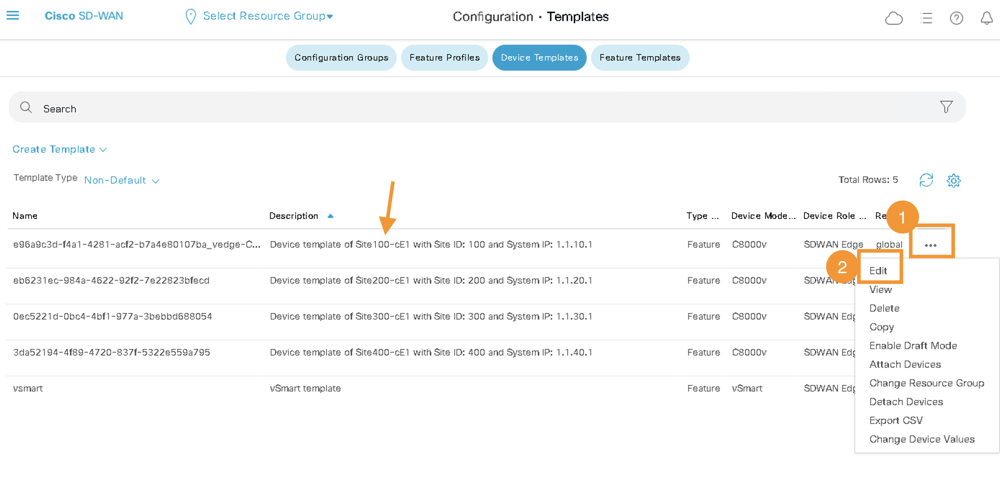
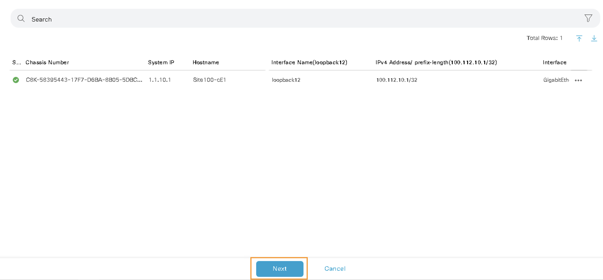
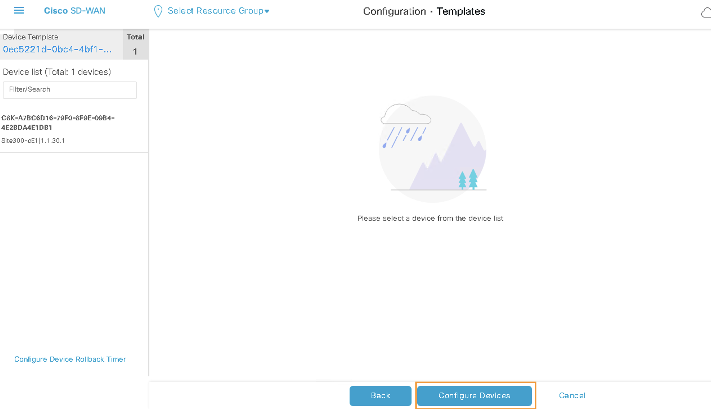
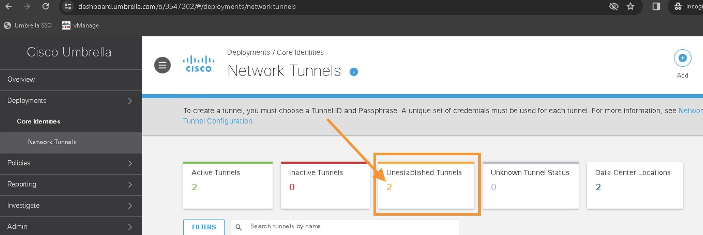
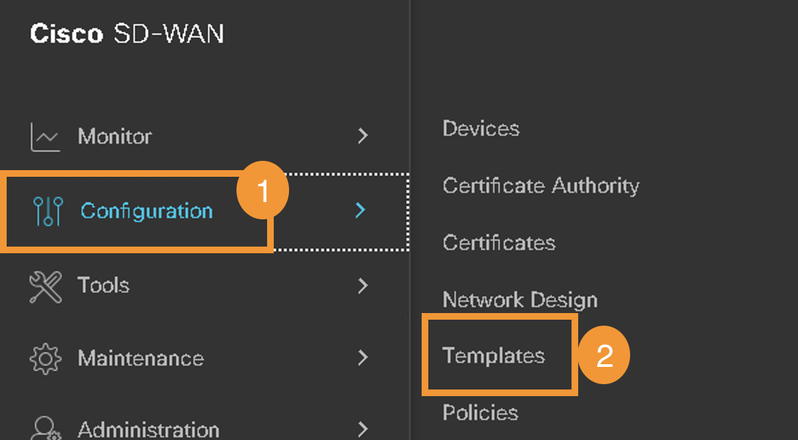

Task 7 - Umbrella SIG for Regional sites
In this task, Umbrella SIG will be integrated to Site 100 will be performed. This integration will be used to route traffic towards Umbrella and enforce Cloud Security policies for local Site 100 as well as for remote Site 400. Recall that as per IP traffic routing (earlier task) the Internet traffic from Site 400 is also routed via Site 100. Hence Umbrella policies from these sites will also be
Step 1 - Apply SIG Templates on vManage
In this step, on vManage, the SIG template in VPN0 on the device template of node Site100-cE1 (in the Transport and Management VPN section) will be performed.
-
On vManage, navigate to Configuration > Templates. And then Click on Device Templates

-
Edit Site100-cE1 template 
-
Click on Transport and Management VPN

-
Click on Cisco Secure Internet Gateway to add the template. And then Select VIP23-SIG-Feature-Template from the drop-down menu.

-
Scroll all the way down to Additional Templates section and ensure Cisco SIG Credentials of VIP23-SIG-Credentials are added.

-
Click Update on this page
-
Click Next 
-
Click Configure Devices 
-
Wait till config push is sucessfull
Step 2 - Verify SIG Tunnels on Umbrella
- Confirm that the tunnels to Umbrella are up by accessing Umbrella dashboard on the Google Chrome via the RDP session and clicking on Umbrella SSO shortcut.
- Navigate to Deployments > Core Identities > Network Tunnels. Initially the tunnels will be shown in Unestablished Tunnels but after few minutes these tunnels be active and shown under Active Tunnels as show in below two screenshots:


Step 3 - Redirect Traffic to SIG tunnels
Now we need to direct all the VPN-10 traffic from SD-WAN site(s) via these IPSec tunnels towards Umbrella by adding a Service route on vManage
-
On vManage, navigate to Configuration > Templates > Feature Templates. Then search for VPN_10_05-09-2022_17-18-00_vedge-C8000V_1201 and click the three dots (...) and Edit from drop-down menu to modify the template: 


-
Click Service Route
-
Click New Service Route
-
Add a Prefix of
0.0.0.0/0pointing to SIG. -
Click Add and then click Update at the bottom of the page

-
click Next and then click Configure Devices
-
Wait till config push is sucessfull
Now all the required configurations on SD-WAN are in-place to route the traffic from Site 100 and Site 400 towards Umbrella using the IPSec tunnels. Next, the Cloud Security policies for these sites will be configured on Umbrella.